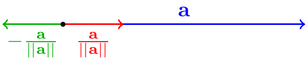
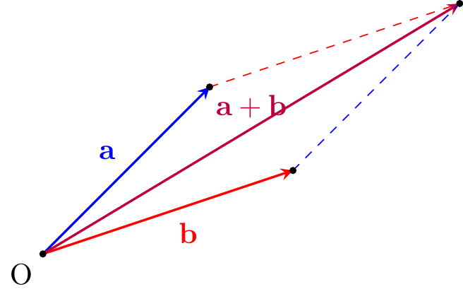
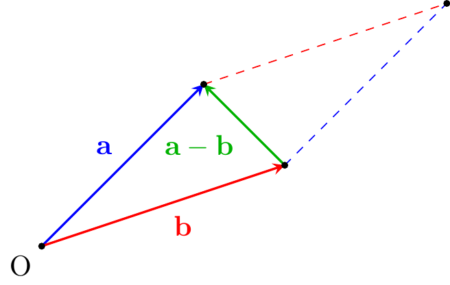
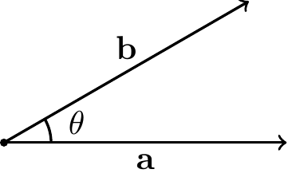
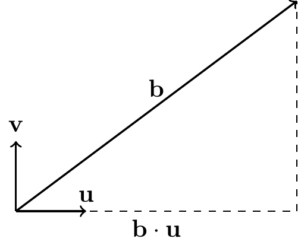
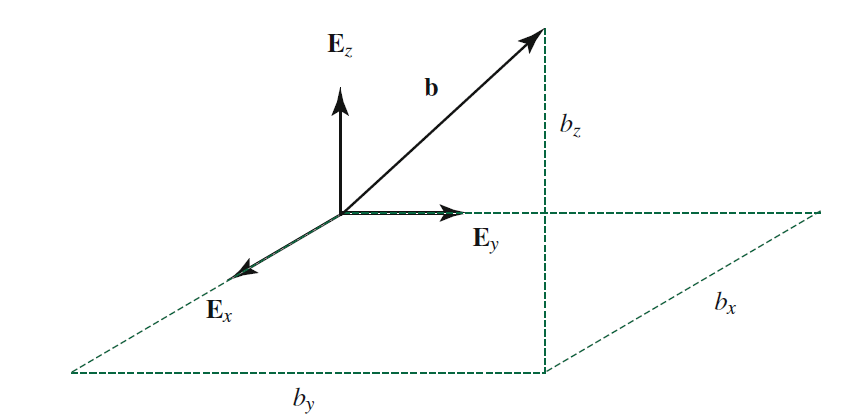
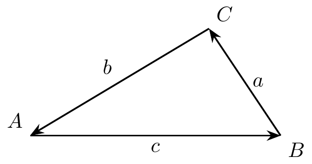
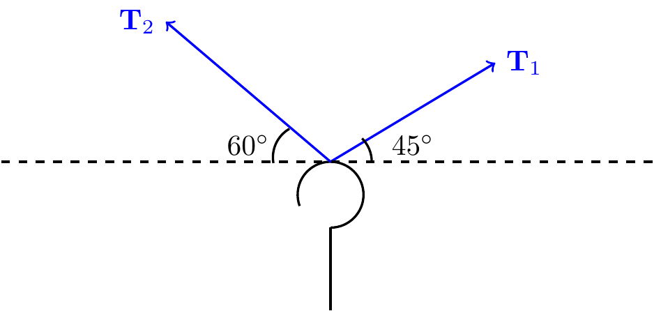
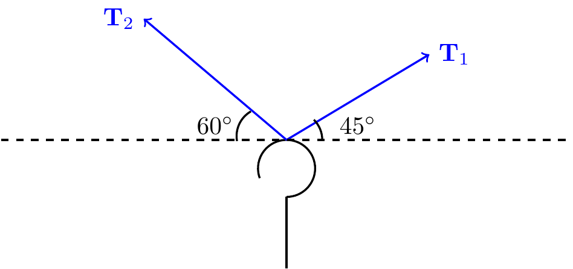
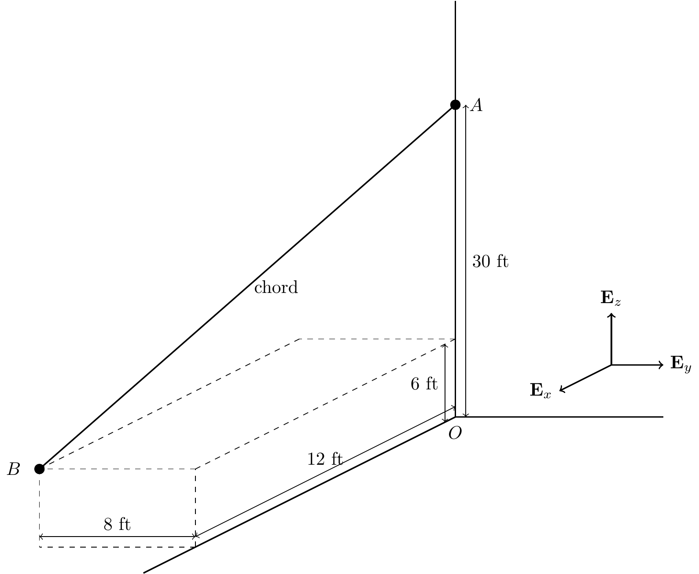

4 Vector Calculus
4.1 Scaling Vectors
We can scale the vector \({\bf a}\).
TipThink!
Question: Consider a vector \({\bf a}\). Plot the vectors \(2{\bf a}\), \(-{\bf a}\), \(\frac{1}{2}{\bf a}\)
NoteAnswer
…
TipThink!
Question: Give the expression for a unit vector in the direction of \({\bf a}\)? Opposite to \({\bf a}\).
NoteAnswer
- \(\frac{\bf a}{\lnorm{\bf a}\rnorm}\) is a unit vector in the direction of \({\bf a}\).
- \(-\frac{\bf a}{\lnorm{\bf a}\rnorm}\) is a unit vector in the direction opposite to that of \({\bf a}\).
4.2 Vector summation and subtraction
Vectors can be added using the parallelogram law or by placing vectors in a head to tail sequence.
The vector difference \({\bf a}-{\bf b}\) points from the tip of \({\bf b}\) to the tip of \({\bf a}\).


4.3 The dot (scalar) product
Consider the three dimensional Euclidean space \(\mathbb{E}^3 = (\mathbb{R}^3,\cdot)\) which is the three-dimensional space \(\mathbb{R}^3\) and a dot product defined as follows.

Let \({\bf a}, {\bf b} \in \mathbb{E}^3\).
\[\begin{align} {\bf a}\cdot{\bf b} &= \lnorm{\bf a}\rnorm \lnorm {\bf b}\rnorm \cos(\theta). \end{align}\]
TipThink!
Question: What is the result of \({\bf a}\cdot{\bf a}\)?
NoteAnswer
The magnitude of a vector \({\bf a}\) is given by \[\begin{align} {\bf a}\cdot{\bf a} = \lnorm{\bf a}\rnorm^2 \implies \lnorm{\bf a}\rnorm = \sqrt{{\bf a}\cdot{\bf a}}. \end{align}\]
TipThink!
Question: Is \({\bf a}\cdot{\bf b} = {\bf b}\cdot{\bf a}\)? Why?
NoteAnswer
Yes, the dot product is commutative. This can be shown using the definition of the dot product.
4.4 Vector Projections
Suppose \({\bf u}\) is a unit vector: \({\bf u}\cdot{\bf u}=1\).

TipThink!
Question: Calculate \({\bf b}\cdot{\bf u}\)
NoteAnswer
\[\begin{align} {\bf b}\cdot{\bf u} = \lnorm{\bf b}\rnorm \underbrace{\lnorm{\bf u}\rnorm}_{1}\cos(\theta) = \lnorm{\bf b}\rnorm\cos(\theta). \end{align}\]
Notice the right triangle in the above figure. Verify that \({\bf b}\cdot{\bf u}\) is the orthogonal projection of \({\bf b}\) in the direction of \({\bf u}\).
Suppose \({\bf v}\cdot{\bf v} = 1\) (\({\bf v}\) is a unit vector), and \({\bf v}\cdot{\bf u}=0\) (\({\bf v}\) and \({\bf u}\) are orthogonal/perpendicular).
\[\begin{align} {\bf b}\cdot{\bf v} = \lnorm{\bf b}\rnorm\cos\lp\frac{\pi}{2}-\theta\rp = \lnorm{\bf b}\rnorm\sin(\theta). \end{align}\]
This is the projection of \({\bf b}\) in the direction perpendicular to \({\bf u}\). Hence, we can write
\[\begin{align} {\bf b} &= \lp{\bf b}\cdot{\bf u}\rp{\bf u}+\lp{\bf b}\cdot{\bf v}\rp{\bf v}\\ &= \underbrace{\lnorm{\bf b}\rnorm}_{\text{magnitude}}\lp\underbrace{\cos(\theta){\bf u}+\sin(\theta){\bf v}}_{\text{direction}}\rp. \end{align}\]
Remember that \(\cos^2(\theta)+\sin^2(\theta)=1\).

4.5 Cross Product
We also define the cross product
\[\begin{align} {\bf a}\times{\bf b} &= \lnorm{\bf a}\rnorm \lnorm{\bf b}\rnorm |\sin(\theta)|{\bf n} \end{align}\]
where \({\bf n}\) is a unit vector normal to the plane formed by \({\bf a}\) and \({\bf b}\). The direction of \({\bf n}\) is given by the right hand rule.
TipThink!
Question: Is \({\bf a}\times{\bf b} = {\bf b}\times{\bf a}\)?
NoteAnswer
No, the cross product is not commutative. These vectors are opposite.
4.6 Vector Representation Using Bases
We can assign a fixed (right handed) Cartesian basis for \(\mathbb{E}^3\) denoted by \(\{{\bf E}_x, {\bf E}_y, {\bf E}_z\}\). These three vectors are orthonormal (i.e. they each have a unit magnitude and are mutually perpendicular).
TipThink!
Question: Calculate \({\bf E}_x \times {\bf E}_x\), \({\bf E}_x \times {\bf E}_y\), etc.
NoteAnswer
…
TipThink!
Question: Calculate \({\bf E}_x \cdot {\bf E}_x\), \({\bf E}_x \cdot {\bf E}_y\), etc.
NoteAnswer
…
We can represent any vector \({\bf b}\) as
\[\begin{align} {\bf a} &= a_x {\bf E}_x + a_y {\bf E}_y + a_z {\bf E}_z,\\ {\bf b} &= b_x {\bf E}_x + b_y {\bf E}_y + b_z {\bf E}_z. \end{align}\]
We can write the scalar product and cross product of these vectors in terms of their Cartesian components.
\[\begin{align} {\bf a} \cdot {\bf b} &= a_x b_x + a_y b_y + a_z b_z\\ {\bf a} \times {\bf b} &= \ldots \end{align}\]

4.7 Differentiation of Vectors
\[\begin{align} \frac{d{\bf u}}{dt} &= \frac{du_x}{dt}{\bf E}_x + \frac{du_y}{dt}{\bf E}_y + \frac{du_z}{dt}{\bf E}_z + u_x\frac{d{\bf E}_x}{dt} + u_y\frac{d{\bf E}_y}{dt} + u_z\frac{d{\bf E}_z}{dt}\\ &= \frac{du_x}{dt}{\bf E}_x + \frac{du_y}{dt}{\bf E}_y + \frac{du_z}{dt}{\bf E}_z \end{align}\]
\[\begin{align} \frac{d}{dt}({\bf u}\cdot{\bf v}) = \frac{d{\bf u}}{dt}\cdot{\bf v} + {\bf u}\cdot\frac{d{\bf v}}{dt} \end{align}\]
\[\begin{align} \frac{d}{dt}({\bf u}\times{\bf v}) = \frac{d{\bf u}}{dt}\times{\bf v} + {\bf u}\times\frac{d{\bf v}}{dt} \end{align}\]
4.8 Sine Law and Cosine Law

Referring to the above triangle with interior angles \(A\), \(B\), and \(C\) and with side lengths \(a\), \(b\), and \(c\), the sine law and cosine law are respectively
\[\begin{align} \frac{\sin(A)}{a} &= \frac{\sin(B)}{b} = \frac{\sin(C)}{c},\\ c^2 &= a^2 + b^2 - 2ab\cos(C). \end{align}\]
4.9 Lecture Videos
4.10 Exercises
The following problems are from Set 01 – Vector Calculus.
1. Two chords are pulling on a hook with tensions \(T_1 = 100\) N and \(T_2 = 50\) N as shown. Using the parallelogram rule, determine the magnitude of the resultant force and the angle it makes with the horizontal. Do not introduce a Cartesian basis.

2. Resolve the horizontal force \(F\) into components along the \(u\) and \(v\) axes and determine the magnitudes of the components.
3. In Exercise 1, take unit vectors \(\mathbf{I}\) and \(\mathbf{J}\) to point horizontally leftwards and vertically upwards. The unit vector \(\mathbf{K}\) completes the right-handed triad. Repeat Exercise 1 by resolving all forces in the Cartesian \(\{\mathbf{I},\mathbf{J},\mathbf{K}\}\) basis.
4. A particle moves in space with velocity \[\begin{align} \mathbf{v}(t) = 2t^2\mathbf{E}_1 - \mathbf{E}_2 + (-5t+3)\mathbf{E}_3 \quad \text{m/s}. \end{align}\] (a) Calculate \(\mathbf{v}\) at \(t=1\) s. (b) Calculate \(\mathbf{a}(t)\equiv\dot{\mathbf{v}}(t)\). (c) Given \(\mathbf{r}(0)=2\mathbf{E}_3\), find \(\mathbf{r}(t)\).
5. A child at \(B\) pulls a chord attached to the wall at \(A\) with a force of \(70\) N.

- Express the position vector \(\mathbf{r}_A\) in Cartesian coordinates.
- Express the position vector \(\mathbf{r}_B\) in Cartesian coordinates.
- Draw \(\mathbf{r}_{B/A} = \mathbf{r}_B - \mathbf{r}_A\). Does it point from \(B\) to \(A\) or from \(A\) to \(B\)?
- Draw \(\mathbf{r}_{A/B}\).
- What is the tension force \(\mathbf{T}\) in the cable?
6. Referring to Exercises 1 and 3:
- Calculate \(\mathbf{T}_1\times\mathbf{T}_2\) without using a basis.
- Express \(\mathbf{T}_1\) and \(\mathbf{T}_2\) in the Cartesian basis from Exercise 3 and verify part (a).
- What is \(\mathbf{T}_2\times\mathbf{T}_1\)?